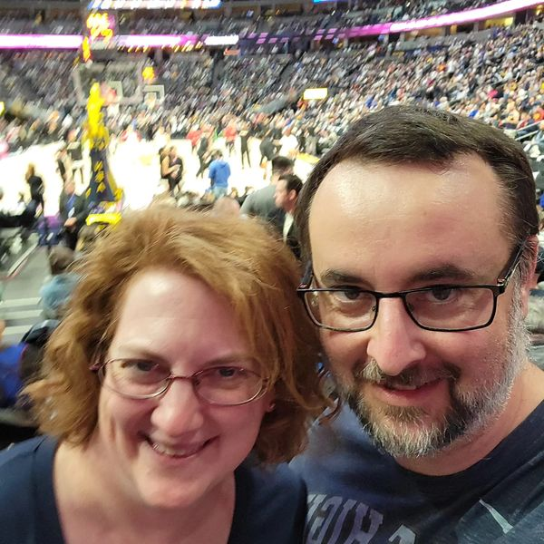

William Chase - My Resume

Summary
Hello and welcome to my online Resume. The page shows a summary of my Education, Work Experiance, and Skills.
Education
- University of Nebrask at Kearney - BS in IT - 2011
- Manhattan Christian College - BA in Bibilical Studies - 2004
- Kearny High School - Diploma - 1998
Work Experience
- Field Squared - Cloud Network Implementation Architect - 2020 to Present
- Dish Network - Mobility Network Manager - 2015 to 2020
Skills
- AWS Cloud
- HTML/CSS/Javascript
- JSON
- API
- SQL